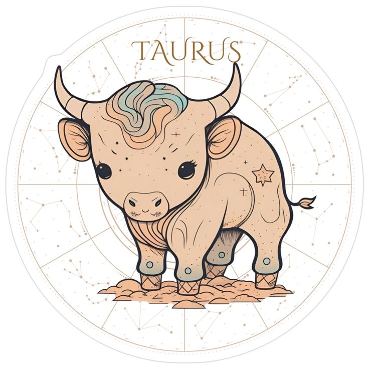

About Me
I am 33 years young, my zodiac sign is a Taurus
I am patient, strong willed/ bull headed, and will do anything for the people I love. I enjoy yoga and meditation.

I am currently attending WGU to get my degree in cybersecurity this fall and hope to graduate by 2028.
I love all animals, exploring new places with my daughter.
- Mitsy - My orange taby boy
- Monkey - My sweet little snowshoe
- Customer Service
- Avaya
- Supervisor position
- Multitasking
- De-escalation
My Pets

Skills
I have had over 10 years of experience in the trucking industry and have travel in the 48 states in a truck. I have my class A CDL Since the birth of my daughter I started working from home and have gained in skills and experience in customer service and work as a accident managment dispatcher
I have experience with
Dream Vacation
My next "Dream" vacation that I am going to make a reality is going on a roadtrip to california with my daughter.
Itinerary
First stop - Las Vegas! We will stop to go see the Titanic Museum they have at Malibu for a day hang out on the beach get some of the fresh ocean breeze to reset and remember to enjoy life Long Beach - Queen Mary here we come! My daughter and I want to explore the queen mary and do a haunted tour. Universal Studios Hollywood - spend a day or two at the theme parkWork Experience
Arise Virtual Solutions December 2021 - Present
MetaSource January 2025 - July 2026
Uber, Lyft, Doordash 2018-2020
WM Transport(FedEx Contractor) October 2017 - April 2018
Manager LAK Express Trucking August 2012 - September 2018
Calling All Dogs - Assistant Dog Trainer May 2010-August 2011